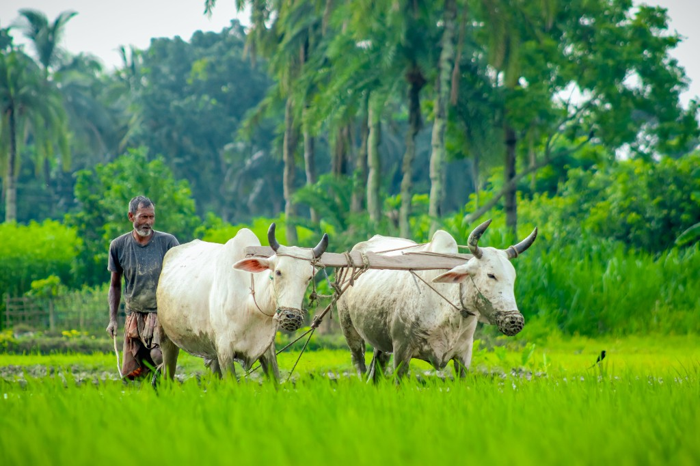

আধুনিক কৃষকের ডিজিটাল প্ল্যাটফর্ম
ফলিকা ডিজিটাল কৃষি সেবা
ফসলের রোগ নির্ণয়, আধুনিক চাষাবাদ পদ্ধতি, স্তরভিত্তিক মৎস্যচাষ, প্রাণিসম্পদ স্বাস্থ্য এবং আবহাওয়া ভিত্তিক সেচ পরামর্শ।
প্রধান ড্যাশবোর্ড মডিউল
আপনার প্রয়োজন অনুযায়ী মডিউলে প্রবেশ করুন
ফসল মডিউল
ফসল চাষাবাদ
জমির দৈর্ঘ্য ও প্রস্থ দিয়ে স্বয়ংক্রিয় ক্ষেত্রফল, ফসল পর্যায়ক্রম, সেচ ও সার হিসাব।
মৎস্য মডিউল
মৎস্যচাষ
পুকুরের মাপ দিয়ে স্তরভিত্তিক মাছ ও খাদ্য তালিকা তৈরি করুন।
প্রাণিসম্পদ
গবাদিপশু
খাদ্য তালিকা, টিকাদান ক্যালেন্ডার ও স্বাস্থ্য পর্যবেক্ষণ।
এআই প্রযুক্তি
রোগ নির্ণয়
ছবি তুলে এআই দিয়ে রোগ শনাক্ত ও চিকিৎসা পরামর্শ পান।
কমিউনিটি
কমিউনিটি ও ডিলার
কৃষি অফিস হটলাইন, প্রশিক্ষণ বিজ্ঞপ্তি এবং ডিলার ডিরেক্টরি।
সরকারি সেবা
সরকারি প্রণোদনা
কৃষি ভর্তুকি, ঋণ সুবিধা ও জরুরি হটলাইন নম্বর।
আর্থিক হিসাব
আমার আয়-ব্যয়
সকল প্ল্যানের সম্মিলিত খরচ ও সম্ভাব্য লাভ দেখুন।